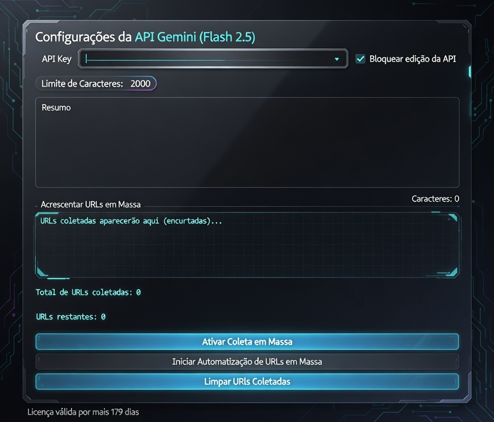

O NewsMaker automatiza todo o processo: do roteiro à narração. Perfeito para YouTube, TikTok, Reels e Shorts.
Insira a URL de uma notícia ou artigo de blog. A IA lê e interpreta o conteúdo instantaneamente.
Criamos um roteiro persuasivo e geramos uma narração com voz humana profissional.
O sistema monta as imagens e legendas. Você só precisa baixar e postar no seu canal.

"Antes eu levava 5 horas para editar um vídeo de notícias. Com o NewsMaker, faço 15 vídeos em menos de 1 hora."
"A qualidade da narração é impressionante. Meus seguidores nem percebem que é Inteligência Artificial."